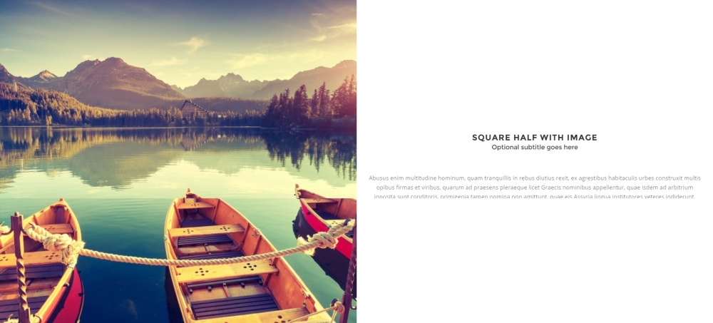

Sections allow you to separate your page into different elements.
<section class="section"> <!-- SECTION CONTENT --> </section>
To add a light border on top, add border-top class to your section. For border bottom, add border-bottom class.
If you want a minimum height for your section, you can add this class your section:
section-lg: your section will have a minimum height of 400px.
section-hg: your section will have a minimum height of 600px.

Half section are great for image on one side and text / description in other side.
<section class="section half-section">
<div class="img-cover" data-bg-img="nature/square-1.jpg"></div>
<div class="p-30">
<div class="title">
<h3>Title</h3>
<p>Subtitle</p>
</div>
<p>Section description...</p>
</div>
</section>
You can change padding of your description side by replacing p-30 by other value (p-40, p-50...).
If you want to have square section (same width / height), add img-cover-square class to img-cover:
<section class="section half-section">
<div class="img-cover img-cover-square" data-bg-img="nature/square-1.jpg"></div>
<div class="p-30">
<div class="title">
<h3>Title</h3>
<p>Subtitle</p>
</div>
<p>Section description...</p>
</div>
</section>
You can add a background image to your section using data-bg-img attribute.
<section class="section" data-bg-img="your-image-path.jpg"> <!-- SECTION CONTENT --> </section>
For parallax effect, use Skrollr attribute. For example:
<section class="section" data-bg-img="your-image-path.jpg" data-bottom-top="background-position:0px 0px;" data-top-bottom="background-position:0px -130px;"> <!-- SECTION CONTENT --> </section>
For more information about Skrollr attribute, please visit Skrollr official documentation here.
To add a background color to your section, add your color class to your section, for example:
<section class="section indigo lighten-4"> <!-- SECTION CONTENT --> </section>
For more details about all background colors classes, please see colors documentation.